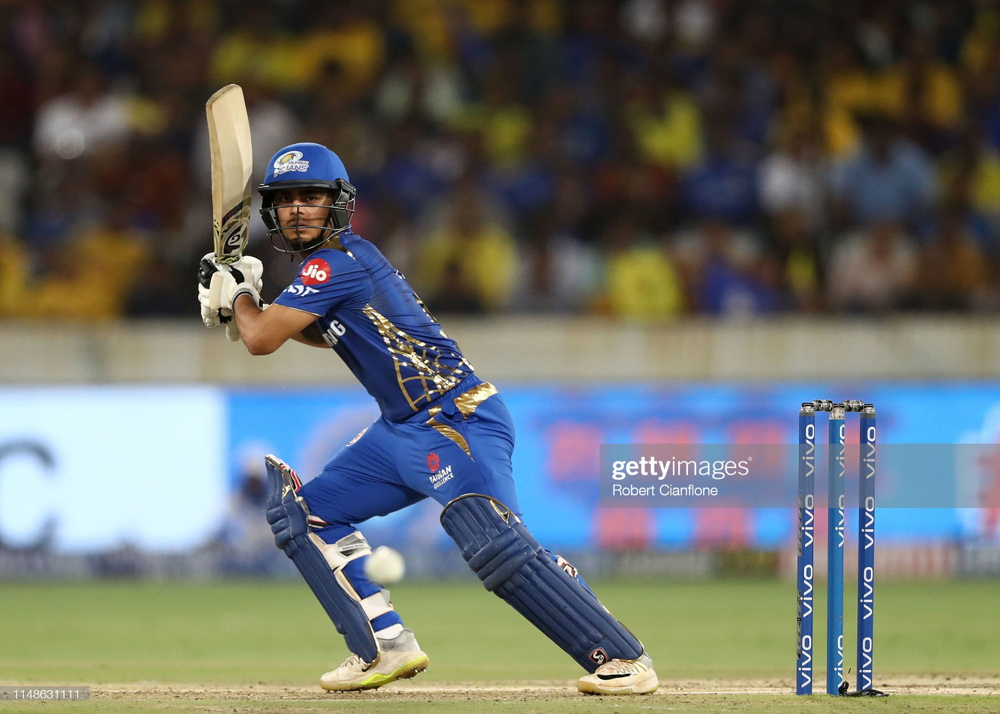

Today Indian Cricket Team Players List
| India Match Update

- Rohit Sharma
- Shubhman gil
- Virat kohali
- Ishan Kishan
- Suryakumar Yadav
- Hardik Pandya
- Washinton sundar
- Shardul Takur
- Kuldip Yadav
- Yuzvendra Chahal>
- Umran Malik>
Rohit Sharma

Rohit Gurunath Sharma (born 30 April 1987) is an Indian international cricketer and the current captain of the Indian cricket team. Considered as one of the best opening batters of all time,[2] Rohit is known for his timing, elegance, six-hiting abilities and leadership skills. He plays as a right-handed batsman for India national cricket team in international cricket, Mumbai Indians in IPL and for Mumbai in domestic cricket. Rohit also captains Mumbai Indians and the team has won 5 titles under his leadership, the most by any team.
Sharma currently holds the world record for the highest individual score (264) in a One Day International (ODI) match and is the only player to have scored three double-centuries in ODIs and also holds the record for scoring most hundreds (five) in a single Cricket World Cup, for which he won the ICC Men's ODI Cricketer of the Year award in 2019. Sharma has received two national honours, the Arjuna Award in 2015 and the prestigious Major Dhyan Chand Khel Ratna in 2020.
Outside cricket, Sharma is an active supporter of animal welfare campaigns. He is the official Rhino Ambassador for WWF-India and is a member of People for the Ethical Treatment of Animals (PETA). He has worked with PETA in its campaign to raise awareness of the plight of homeless cats and dogs in India.
Early life
Sharma was born on 30 April 1987 in Bansod, Nagpur, Maharashtra.[3] His mother, Purnima Sharma, is from Visakhapatnam, Andhra Pradesh.[4] His father, Gurunath Sharma, worked as a caretaker of a transport firm storehouse. Sharma was raised by his grandparents and uncles in Borivali because of his father's low income. He would visit his parents, who lived in a single-room house in Dombivli, only during weekends.[5] He has a younger brother, Vishal Sharma.[6]
Sharma joined a cricket camp in 1999 with his uncle's money. Dinesh Lad, his coach at the camp, asked him to change his school to Swami Vivekanand International School, where Lad was the coach and the cricket facilities were better than those at Sharma’s old school. Sharma recollects, "I told him I couldn't afford it, but he got me a scholarship. So for four years I didn't pay a penny, and did well in my cricket".[6] Sharma started as an off-spinner who could bat a bit before Lad noticed his batting ability and promoted him from number eight to open the innings. He excelled in the Harris and Giles Shield school cricket tournaments, scoring a century on debut as an opener.[7]
Sharma made his List A debut for West Zone against Central Zone in the Deodhar Trophy at Gwalior in March 2005. Batting at number eight, he scored 31 not out as West Zone won by 3 wickets with 24 balls remaining. Cheteshwar Pujara and Ravindra Jadeja made their debuts in the same match.[8] It was Sharma's unbeaten innings of 142 in 123 balls against North Zone at the Maharanna Bhupal College Ground in Udaipur in the same tournament that brought him into the limelight.[9] He visited Abu Dhabi and Australia with the India A squad and was then included among India's 30-member probables list for the upcoming ICC Champions Trophy tournament, although he did not make the final squad.[10]
Sharma made his first-class debut for India A against New Zealand A at Darwin in July 2006. He scored 57 and 22 as India won by 3 wickets.[11] He made his Ranji Trophy debut for Mumbai in the 2006–07 season and scored 205 off 267 balls against Gujarat.[12] Mumbai went on to win the tournament with Sharma scoring a half-century (57) in his second innings in the final against Bengal.[13]
Sharma has spent his entire domestic first-class career at Mumbai. In December 2009, he made his highest career score of 309 not out in the Ranji Trophy against Gujarat.[14] In October 2013, upon the retirement of Ajit Agarkar, he was appointed team captain ahead of the 2013–14 season.[
Shubman gil

Shubman Gill (born 8 September 1999) is an Indian international cricketer who plays for Punjab in domestic cricket as a right-handed opening batsman.[2][3] He was the vice-captain of the India U-19 team for 2018 Under-19 Cricket World Cup.[4] He got awarded with Player of The Tournament for same U-19 Cricket World cup. He is the youngest cricketer to score a double century in ODI cricket.
He made his List-A debut against Vidharbha[5] in 2017 and first-class debut for Punjab against Bengal in the 2017–18 Ranji Trophy, in late 2017, with a half-century in the game,[6] and 129 runs in the LAST match against Services.[7] He made his international debut for the Indian cricket team in January 2019.[2]
He was drafted into India's Under-19 side as the vice-captain for the 2018 Under-19 Cricket World Cup. Shubman scored 372 runs at an average of 124.00 at the tournament, where he batted at number three to play a crucial role in India's record fourth world title and was adjudged the edition's Player of the Tournament.[8] His match-winning 102 not out in the semi-final against arch-rivals Pakistan U-19 drew praises from batting greats such as Rahul Dravid, Sachin Tendulkar, VVS Laxman, and Sourav Ganguly.[9][10]
Personal life
Shubman Gill's father Lakhwinder Singh was a farmer and Didar Singh Gill is his grandfather. He was born in 'Chak Khere wala (also reported as Chak Jaimal Singh Wala)' village, which is present near Jalalabad Tehsil of Fazilka, Punjab into a Punjabi Sikh family.[11] Shubman Gill has a sister and her name is Shaheen Gill.[12] His father Lakhwinder created a cricket ground in his farm for Gill's practice and a turf pitch to play,[5] he used to challenge village boys to take his lad's wicket and if they were successful he would give them 100 rupees for it. According to Lakhwinder Singh he left farming in his village and moved to Mohali to make his boy a professional cricketer. For some years Gill took coaching from his school, after his father admitted him in Punjab cricket association's academy.[13][14] Gill spent some years of his life in his village. Gill's father wanted to become a professional cricketer. In Gill's childhood he was interested in farming and he still wants to do farming according to his father. Shubman Gill is emotionally very attached to his village and his farm.[15][16]
Early life
Shubman Gill was born in Fazilka, Punjab. His family owned agricultural lands there. His father, Lakhwinder Singh, an agriculturist, wanted to become a cricketer but could not fulfil his dream. Instead, he decided to make Gill a good cricketer. He observed his son's cricketing ability at an early age and welcomed the opportunity to modify his cricketing capacity. He would ask the hired help on the farm to throw balls at Shubman to help him practice batting.[17] Gill's father was convinced of his talent, and moved the family to Mohali and rented a house near the PCA Stadium.[18]
Gill's father said that Shubman was passionate about cricket since the age of three. “He only played cricket since he was three-years-old. Kids of that age would play with toys. He never asked for such things. It was only bat and ball for him. He used to sleep with a bat and ball”, Gill's father, Lakhwinder Singh said.[19]
On his Under-16 state debut for Punjab, he hit an unbeaten double-century in the Vijay Merchant Trophy. In 2014, he scored 351 runs in Punjab's Inter-District Under-16 competition and shared a record opening stand of 587 runs with Nirmal Singh.[20]
Domestic career
He made his List A debut for Punjab in the 2016–17 Vijay Hazare Trophy on 25 February 2017 against Vidharbha team.[5][21] He made his first-class debut for Punjab in the 2017–18 Ranji Trophy on 17 November 2017.[22] Later the same month, in his second first-class match, he scored his maiden century, batting for Punjab against Services.[23] He scored 129 against Bengal team.[5]
In January 2018, he was bought by the Kolkata Knight Riders for ₹1.8 crore (US$230,000) in the 2018 IPL auction.[24][25] He made his Twenty20 debut for Kolkata Knight Riders in the 2018 Indian Premier League on 14 April 2018.[26]
In October 2018, he was named in India C's squad for the 2018–19 Deodhar Trophy.[27] In the final round-robin match, against India A, he scored an unbeaten century to help send India C through to the final.[28] The following month, he was named as one of eight players to watch ahead of the 2018–19 Ranji Trophy.[29] In December 2018, during Punjab's match against Tamil Nadu in the Ranji Trophy, Gill scored his maiden double century in first-class cricket, scoring 268 runs.[30][31] On 25 December 2018, on the fourth day of the match against Hyderabad in the Ranji Trophy, with Punjab needing 338 runs from 57 overs, Gill scored 148 off 154 balls to almost single-handedly take his side to victory. The match finished as a draw, with Punjab ending the run chase at 324/8 in 57 overs.[32]
By 1 January 2019, Gill had scored 990 runs in first-class cricket, from fourteen innings across eight matches.[33] One week later, he scored his 1,000th run in first-class cricket, in his fifteenth innings.[34] He was the leading run-scorer for Punjab in the 2018–19 Ranji Trophy, with 728 runs in five matches.[35] In March 2019, he was named as one of eight players to watch by the International Cricket Council (ICC) ahead of the 2019 Indian Premier League tournament.[36] He also won the Emerging Player of the tournament award in the 2019 Indian Premier League.[37]
In August 2019, he was named as the captain of the India Blue team for the 2019–20 Duleep Trophy.[38][39] In October 2019, Gill was selected as the captain of the India C team for the 2019–20 Deodhar Trophy.[40] In November 2019, he became the youngest cricketer to lead a side in the tournament. He was 20 years and 57 days old, beating Virat Kohli's record, when he was 21 years 124 days old, during the 2009–10 tournament.[41]
Ahead of the 2022 IPL auction, Gill left the Kolkata Knight Riders and was drafted by the newly formed Gujarat Titans franchise.[42]
Virat kohali

Virat Kohli (Hindi pronunciation: [ʋɪˈɾɑːʈ ˈkoːɦli] (listen); born 5 November 1988) is an Indian international cricketer and former captain of the Indian national team. He is widely regarded as one of the greatest batsmen of all time in international cricket.[3] Kohli plays as a right-handed batsman for Royal Challengers Bangalore in the IPL and for Delhi in Indian domestic cricket. He holds the record for scoring most runs in both T20 internationals and in IPL. In 2020, the International Cricket Council named him as player of decade. Kohli has won Man of the Tournament award twice at the ICC World Twenty20, in 2014 and 2016. Playing for his franchise in IPL, he won the Orange Cap and Most-valuable Player Award in 2016 season. Furthermore has won most player of the match and series awards in T20I. With 40 wins in 68 Test matches, he is India's most successful Test captain. Kohli has also contributed to India's successes, including winning the 2011 World Cup and the 2013 Champions trophy.
Born and raised in Delhi, Kohli trained in West Delhi Cricket Academy; started his youth career with Delhi Under-15 team. Kohli made his international debut in 2008 and quickly became a key player in the ODI team. He made his Test debut in 2011.[4] In 2013, Kohli reached the number one spot in the ICC rankings for ODI batsmen for the first time.[5] During 2014 T20 World Cup, he set a record for the most runs scored in the tournament. In 2018, Kohli became the number one ranked Test batsman, making him the only Indian batsman to achieve the top spot in the ICC rankings in all three formats. His form continued in 2019, where he became the first player to score 20,000 international runs in single decade. In 2021, Virat Kohli made the decision to step down as the captain of the Indian national team for T20Is, following the T20 World Cup and in early 2022 he stepped down as the captain of the Test team as well.
Kohli has received many accolades for his performances on the cricket field. He was recognized as the ICC ODI Player of the Year in 2012 and has won Sir Garfield Sobers Trophy, given to the ICC Cricketer of the Year, on two occasions, in 2017 and 2018. Kohli also won ICC Test Player of the Year and ICC ODI Player of the Year awards in 2018, becoming the first player to win both awards in the same year. Additionally, Kohli was named the Wisden Leading Cricketer in the World for three consecutive years, from 2016 to 2018. At the national level, Kohli was honoured with the Arjuna Award in 2013, the Padma Shri under the sports category in 2017 and the Major Dhyan Chand Khel Ratna award, India's highest sporting honour, in 2018.
In 2016, he was ranked as one of the world's most famous athletes by ESPN[6] and one of the most valuable athlete brands by Forbes.[7] In 2018, Time magazine included him on its list of the 100 most influential people in the world.[8] In 2020, he was ranked 66th in Forbes list of the top 100 highest-paid athletes in the world for the year 2020 with estimated earnings of over $26 million.[9]
Early life
Virat Kohli was born on 5 November 1988 in Delhi to a Punjabi Hindu family.[10] His father, Prem Kohli, worked as a criminal lawyer and his mother, Saroj Kohli, is a housewife.[11] He has an older brother, Vikas, and an older sister, Bhawna.[12] According to his family, when he was three-years old, Kohli would pick up a cricket bat, start swinging it and ask his father to bowl at him.[13]
Kohli was raised in Uttam Nagar[14] and started his schooling at Vishal Bharti Public School. In 1998, the West Delhi Cricket Academy was created and a nine-year-old Kohli was part of its first intake.[14] Kohli's father took him to the academy after their neighbours suggested that "Virat shouldn't waste his time in gully cricket and instead join a professional club".[11] Kohli trained at the academy under his coach Rajkumar Sharma and also played matches at the Sumeet Dogra Academy at Vasundhara Enclave at the same time.[14] Sharma recounts Kohli's early days at his academy, "He oozed talent. It was so difficult to keep him quiet. He was a natural in whatever he did and I was most impressed with his attitude. He was ready to bat at any spot, and I had to literally push him home after the training sessions. He just wouldn’t leave."[15] In ninth grade, Kohli shifted to Saviour Convent School in Paschim Vihar to advance his cricket practice.[16][17] His family lived in Meera Bagh until 2015 when they moved to Gurgaon.[18]
Kohli's father died on 18 December 2006 due to a stroke after being bed-ridden for a month.[16] According to Kohli, his father supported his cricket training during his childhood, "My father was my biggest support. He was the one who drove me to practice everyday. I miss his presence sometimes."[19] His mother noted that:
Virat changed a bit after that day. Overnight he became a much more matured person. He took every match seriously. He hated being on the bench. It's as if his life hinged totally on cricket after that day. Now, he looked like he was chasing his father's dream which was his own too.[16]
Youth and domestic career
Delhi
Kohli first played for Delhi Under-15 team in October 2002 in the 2002–03 Polly Umrigar Trophy. He was the leading run-scorer for his team in that tournament with 172 runs at an average of 34.40.[20] He became the captain of the team for the 2003–04 Polly Umrigar Trophy; scored 390 runs in 5 innings at an average of 78 including two centuries and two fifties.[21][22] In late 2004, Kohli got selected in the Delhi Under-17 team for the 2004–05 Vijay Merchant Trophy. He scored 470 runs in four matches at an average of 117.50 with two hundreds and top-score of 251* in that tournament.[23] Delhi Under-17s won the next years Vijay Merchant Trophy in which Kohli finished as the highest run-scorer with 757 runs from 7 matches at an average of 84.11 that included two centuries.[24]
In February 2006, he made his List A debut for Delhi against Services but did not get to bat.[25] Few months later, made his first-class debut for Delhi against Tamil Nadu[26] in November 2006, at the age of 18; he was dismissed for 10 runs in his debut innings.[27] Kohli came into the spotlight in December when he decided to play for his team against Karnataka; on the day after his father's death and went on to score 90.[28] He went directly to the funeral after he was dismissed. Delhi captain Mithun Manhas said, "That is an act of great commitment to the team and his innings turned out to be crucial" while coach Chetan Chauhan lauded Kohli's "attitude and determination."[29] He scored a total of 257 runs from 6 matches at an average of 36.71 in that season.[30]
In April 2007, Kohli made his T20 debut and finished as the highest run-getter for his team in the Inter-State T20 Championship with 179 runs at an average of 35.80.[31][32] In September 2008, Kohli played in Nissar Trophy against SNGPL (winners of Quaid-i-Azam Trophy from Pakistan) and top-scored for Delhi in both innings, with 52 and 197.[33] The match was drawn but SNGPL won the trophy on first-innings lead.[34
Ishan KIsan

Ishan Pranav Kishan (born 18 July 1998) is an Indian international cricketer. He plays for the Indian national cricket team and in the Indian Premier League for Mumbai Indians as a wicket-keeper and batsman. He made his international debut in March 2021 against England. He plays for Jharkhand in domestic cricket. He was the captain of India's squad for the 2016 Under-19 Cricket World Cup.[3][4]
In December 2022 he scored 210 runs in 131 balls in a One Day International (ODI) match against Bangladesh, becoming both the youngest and the fastest cricketer to score an ODI double century and the first to convert a maiden ODI century to a double century.[5]
Early life
Ishan Kishan was born on 18 July 1998 in Bihar. His father, Pranav Kumar Pandey is a builder by profession in Patna.[6] Due to registration issues between Bihar Cricket Association and the Board of Control for Cricket in India (BCCI), Ishan started playing for neighboring state Jharkhand.[7][8]
Domestic career
On 6 November 2016, Kishan scored 273 runs against Delhi in the 2016–17 Ranji Trophy, setting a new record for a player for Jharkhand in the competition.[9][10] He was the leading run-scorer for Jharkhand in the 2017–18 Ranji Trophy, with 484 runs in six matches[11] and in the 2018–19 Vijay Hazare Trophy, with 405 runs in nine matches.[12]
In October 2018, he was named in the India C squad for the 2018–19 Deodhar Trophy,[13] scoring a century in the tournament's final.[14] In February 2019, in the 2018–19 Syed Mushtaq Ali Trophy, he scored an unbeaten century against Jammu and Kashmir.[15] In the next match, against Manipur, he scored 113 not out to record back-to-back centuries in the tournament.[16]
In August 2019, he was named in India Red's squad for the 2019–20 Duleep Trophy[17][18] and in October in the India A squad for the same competition.[19] In February 2021, on the opening day of the 2020–21 Vijay Hazare Trophy, Kishan scored 173 runs against Madhya Pradesh, part of a record score of 422.[20][21]
Indian Premier League
In 2016, Kishan was bought by Gujarat Lions in the 2016 IPL auction.[22] In 2018, he was bought by the Mumbai Indians in the 2018 auction.[23] He was the highest run-scorer for Mumbai in the 2020 season, with 516 runs from 14 matches[24] and won the award for hitting the most sixes during the season.[25]
Ahead of the 2022 IPL, Kishan was bought again by Mumbai for ₹15.25 crore (US$1.9 million), making him the second-most expensive Indian player at the auction after Yuvraj Singh.[26]
International career
In February 2021, Ishan was named in India's Twenty20 International (T20I) squad for their home series against England.[27] It was his maiden international call-up[28] and he went on to make his debut on 14 March 2021, scoring 56 from 32 balls.[4] He won the player of the match award.[29]
In June 2021, he was named in India's One Day International (ODI) and T20I squads for their tour of Sri Lanka.[30] He made his ODI debut on the tour in July, scoring 59 from 42 balls.[31] In September he was named in India's squad for the 2021 ICC Men's T20 World Cup.[32]
In October 2022, Kishan scored his then ODI career highest score of 93 runs in the second of three ODIs against the touring South Africans[33] before going on to become the youngest―aged 24 years and 145 days―and the fastest player to score a double century in an ODI in December during India's tour of Bangladesh. He scored 210 runs from 131 balls,[34] reaching the 200-run mark in 126 deliveries to beat Chris Gayle's record of 138 balls.[34] He also became the first player to convert a maiden ODI century into a double century,[5] and the fourth Indian player to score a double century in an ODI.[35]
References
"Ishan Kishan - The pocket dynamo conquers the stage". Mumbai Indians. 14 November 2020. Retrieved 16 January 2023.
Wigmore, Tim (2 February 2022). "The future is tall". Cricinfo. Kishan, the more rounded batter, is 5ft 6in.
"Ishan Kishan to lead India at U19 World Cup". ESPNCricinfo. Retrieved 22 December 2015.
"2nd T20I (N), Ahmedabad, Mar 14 2021, England tour of India". ESPN Cricinfo. Retrieved 14 March 2021.
"10 sixes, 24 fours: Full list of records broken by Ishan Kishan during rocking / monster knock of 210 in India vs Bangladesh and during his interview he mentioned post reaching 200 mark he was planning to touch 300 score mark as India was on 35th over when he reached 200 run mark. ODI". Hindustan Times. 10 December 2022.
"Making of Ishan Kishan". Indian Express. 16 March 2021. Retrieved 16 March 2021.
Kumar, Amrendra. "Ishan Kishan is a mixture of MS Dhoni and Adam Gilchrist". IBN Live cricket next. Retrieved 24 December 2015.
Thygarajan, Roshan. "Ishan Kishan: Cool head with shades of Dhoni, Sehwag and Kohli". Wisden India. Archived from the original on 24 December 2015. Retrieved 24 December 2015.
"Ishan Kishan's 273 for Jharkhand". ESPN Cricinfo. Retrieved 9 November 2016.
"Ranji Trophy: Delhi v Jharkhand at Thumba, Nov 5-8, 2016". ESPN Cricinfo. Retrieved 9 November 2016.
"Ranji Trophy, 2017/18: Jharkhand batting and bowling averages".